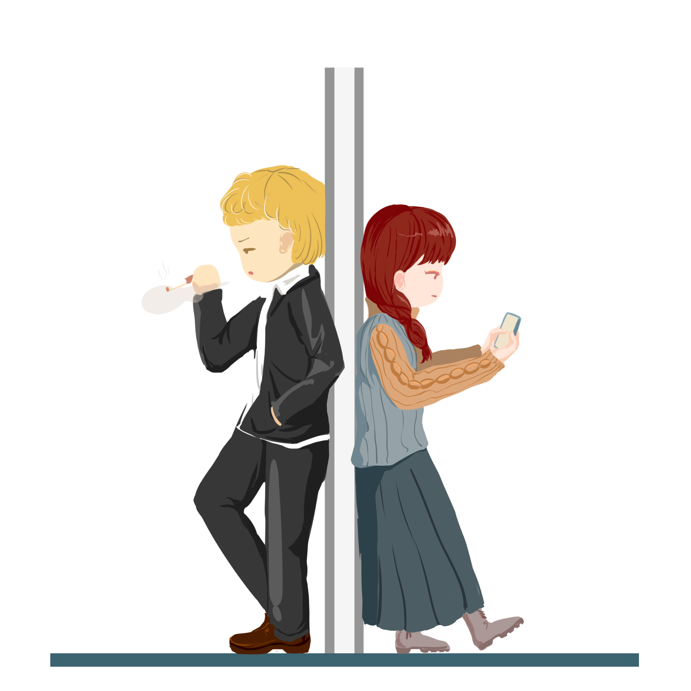

STANDAR PELAYANAN KELURAHAN MEKAR SARI
Berdasarkan SK Lurah Mekar Sari No. 188.46-04/2021

Surat Keterangan Belum Pernah Menikah
Surat Keterangan Berpenghasilan Tidak Tetap
Surat Keterangan Bertempat Tinggal (KTP Luar balikpapan)
Surat Keterangan Domisili (KTP Kelurahan Mekar Sari)
Surat Keterangan Janda/Duda